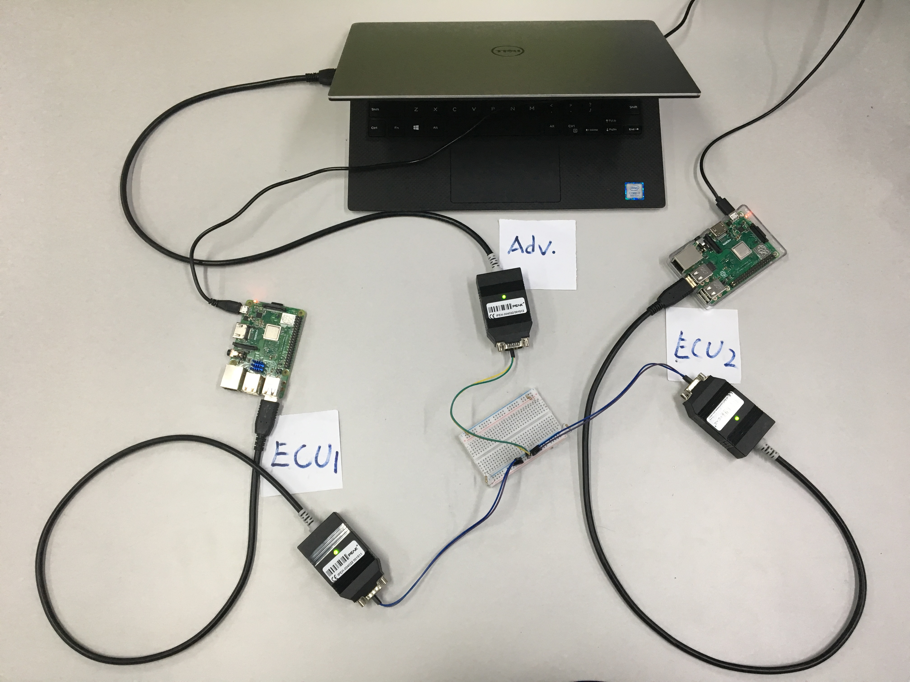

Case Study Setup

Case 1 CAN bus prototype
Three nodes attached to the CAN bus, two legitimate nodes ECU 1 and ECU 2 and one adversary node Adv
-
Node A (ECU 1)
Raspberry Pi Model 3 B+
"Sender" of frame0x184h -
Node B (ECU 2)
Raspberry Pi Model 3 B+
"Receiver" of frame0x184hand replies with frame0x204h -
Node Adv
Laptop (Intel i7-8550U CPU, 8GB RAM)
"Attacker" spoofing and flooding the CAN bus with frame of legitimate ID such as0x184hor0x204h

Case 2 Self-Driving Car
The vehicle hardware specifications are:
- Vehicle Model
Toyota COMS EV - Control System
Autoware (ROS-based) - Sensors
Velodyne 16-line Lidar, radar, camera, GPS/IMU module - Path Following Algorithm
Pure Pursuit
Attack Scenario: An attacker attemps to attack CAN0 from PC.